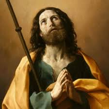

“PRINCÍPIOS DA HISTÓRIA”
Inspirado pelas descrições
antigas, Tiago Maior e um grupo de cristãos procuraram conhecer o idioma espanhol,
pois 
Todavia, pouco tempo depois, com maior e melhor instrução sobre o idioma espanhol, retornou à Espanha no ano 35, agora pela parte sul, atravessando o estreito de Gibraltar; alcançou a cidade de Cadiz, de onde seguiu para Toledo, próximo a Madrid. Permaneceu em Toledo Evangelizando com seus Discípulos por um bom tempo, provavelmente um ano, e finalmente de Toledo rumaram para Zaragoza, aonde se presume que ele chegou durante o ano 37 da era Cristã.
Os percursos e os primeiro acontecimentos ocorridos estão registrados na história religiosa da evangelização da Espanha. Por essa razão, com o objetivo de fixar corretamente o conhecimento, é importante evidenciar que Zaragoza começou a ser povoada seguramente no século VII antes de CRISTO. A esta conclusão chegaram os técnicos e especialistas espanhóis, que pesquisaram a região, e nos restos encontrados, verificaram que eles pertenciam aos habitantes daquelas terras na Idade do Bronze.
Desse modo compreende-se, que quando lá aportou Tiago Maior aproximadamente no ano 37 do século I do Cristianismo, Zaragoza já era uma cidade grande onde ele pode realizar um profundo e fervoroso trabalho de evangelização.
NOSSA SENHORA
EM ZARAGOZA
Existe uma antiga tradição cristã que é respeitada e venerada ao longo dos séculos em toda Espanha e no mundo, segundo a qual, NOSSA SENHORA, a SANTÍSSIMA VIRGEM MARIA, quando ainda estava no mundo, morando em Jerusalém, veio a Zaragoza para confortar e estimular o Apóstolo Santiago Maior. Naquele momento da Aparição, São Tiago com seus Discípulos se encontrava rezando do lado de fora dos muros que cercavam a cidade, nas margens do Rio Ebro que banha Zaragoza. Com as indicações contidas nos registros espanhóis, descreveremos a Aparição da MÃE DE DEUS com plena autenticidade.
Tiago acompanhado dos seus Discípulos vinha realizando um trabalho precioso em todos locais por onde passava. Com grande facilidade de expressão, ele descrevia a admirável Obra de JESUS, e minuciosamente ensinava as doutrinas, realçando o Amor e a Dedicação Divina por cada pessoa em particular. Evidenciava com fervor a grandeza incondicional do Amor de DEUS, que independente de nossa vontade pessoal, o SENHOR abriu o caminho da salvação eterna para todos nós, derramando o SEU Sagrado e Precioso Sangue num madeiro em Jerusalém, lavando a alma de todas as gerações. Em cada palavra forte do Apóstolo, as pessoas abriam mais os olhos e algumas até derramavam lágrimas. Assim, as conversões aconteciam numerosamente. Até grande quantidade de pessoas queriam seguir São Tiago e permanecer junto dele, servindo-o de alguma forma. Modestamente o Apóstolo explicava que ele era apenas um mensageiro que trazia ao coração de todos, palavras que revelavam a grandeza da Bondade e do Amor de DEUS por cada um nós. E que por isso mesmo, cabia a cada pessoa ouvir, e generosamente acolher aquelas palavras e colocá-las em prática na própria vida, para o seu próprio beneficio, e de todos aqueles que constituíam a sua família.
Era verdadeiramente uma conversão em massa. Homens e mulheres acreditavam nos ensinamentos do Apóstolo e sinceramente mudavam o comportamento pessoal na existência.
Mas também, no meio daqueles que realmente tinham fé, havia os que não acreditavam e tramavam contra o Apóstolo, contra os Discípulos dele, e contra todos os cristãos. Lançavam víboras no meio deles esperando que elas os atacassem. Tiago atraia as víboras, segurava nas mãos e as colocavam num cesto grande. Todos ficavam impressionados e admirados com sua coragem e poder.
Objetivando divulgar o Cristianismo em todas as partes, São Tiago e seus Discípulos saiam e visitavam lugares e cidades próximas de onde estavam, e na continuidade, também visitavam cidades e regiões bem mais distantes. Sempre pregando o Evangelho com entusiasmo e fervor fazendo nascer e crescer uma fé forte e preciosa no coração de muitas pessoas. Inicialmente não havia salas e nem Capelas para se encontrarem. Reuniam-se no tempo, nas praças, ao redor de jardins ou em terrenos abandonados. Somente com o passar dos meses, foram construindo pequenas Capelas onde geralmente os cristãos colocavam um Crucifixo sobre uma pequena mesa. Diante de JESUS CRUCIFICADO rezavam, ensinavam o Catecismo e planejavam caminhos de atuações. Com a Missão em andamento, era seu costume escolher pessoas competentes para assumir a responsabilidade do trabalho cristão naquela região, a fim de dar sequência ao ensino do Evangelho e manter o costume do povo rezar. Desse modo todos permaneciam alegres e satisfeitos com os resultados alcançados, e felizes com tão precioso conhecimento, após o termino de cada reunião, muita gente do povo não se afastava, permaneciam por um bom tempo conversando e fazendo companhia ao Apóstolo e aos seus Discípulos.
Certa vez que retornaram há Zaragoza no final de Dezembro do ano 39 da era cristã, após uma magnífica experiência em outras localidades, perceberam que ali, na cidade que eles consideravam como sede, os cristãos atravessavam grande tribulação. Tudo acontecia insuflado e produzido por uma terrível e covarde perseguição realizada por infiéis e por autoridades pagãs, contra a Comunidade Cristã local. Ele procurou contornar as dificuldades e estabelecer bases de entendimento. Mas não teve pleno êxito. Na continuidade, certa noite, piedosamente na companhia de alguns Discípulos decidiu rezar à beira do Rio Ebro, fora dos muros que cercavam a cidade, e suplicava orientações e conselhos a NOSSO SENHOR JESUS, se devia continuar em Zaragoza ou fugir para outra cidade. E assim, enquanto rezava triste e envolvido por muitas dúvidas, com os olhos cheios de lágrimas Tiago lembrou-se de NOSSA SENHORA. Uma esperança maior envolveu o seu coração e então, olhando para o Céu suplicou a SANTÍSSIMA VIRGEM MARIA que o ajudasse a alcançar o Sagrado Auxílio do SEU DIVINO FILHO JESUS. A MÃE DE DEUS de imediato lhe enviou um Anjo que lhe transmitiu a ordem Divina: “Vá a Galícia pregar a fé e depois volte”.
Este acontecimento ocorreu na noite do dia 2 de Janeiro do ano 40 da era cristã. Uma profunda alegria envolveu o coração de São Tiago, e ele repleto de felicidade se apressou em comentar o fato com os seus Discípulos, quando...
Enquanto o assunto vai continuar na próxima página, aqui colocamos uma ligeira orientação geográfica, informando que a “Galícia” na Espanha, ocupa uma área na extremidade Norte do País, localizando-se a esquerda do mapa, na parte superior, como se fosse uma continuação de Portugal. Hoje, no território da Galícia existem notáveis cidades cheias de progresso, onde o catolicismo cresceu verdadeiramente e criou belas raízes, como em: La Coruña; Lugo; Santiago de Compostela; Pontevedra; Orense e muitas outras belas e importantes cidades espanholas.